Installing on Google Cloud¶
Goal¶
By the end of this tutorial, you should have a JupyterHub with some admin users and a user environment with packages you want installed running on Google Cloud.
Prerequisites¶
- A Google Cloud account. You might use the free credits for trying it out!
Step 1: Installing The Littlest JupyterHub¶
Let’s create the server on which we can run JupyterHub.
Log in to Google Cloud Console with your Google Account.
Open the navigation menu by clicking the button with three lines on the top left corner of the page.
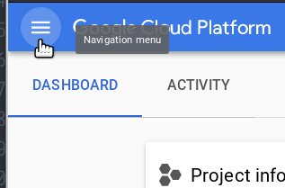This opens a menu with all the cloud products Google Cloud offers.
Under Compute Engine, select VM Instances.
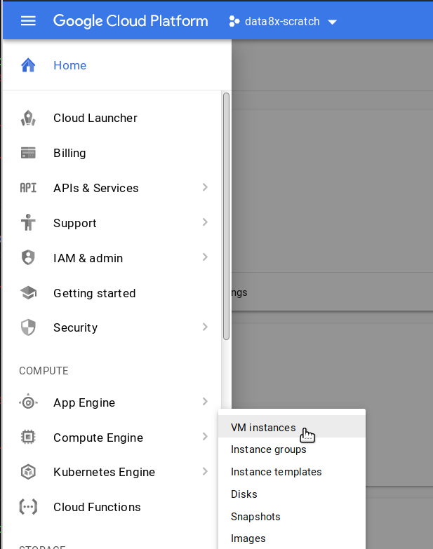If you are using Google Cloud for the first time, you might have to enable billing. Google will present a screen asking you to enable billing to proceed. Click the Enable Billing button and follow any prompts that appear.
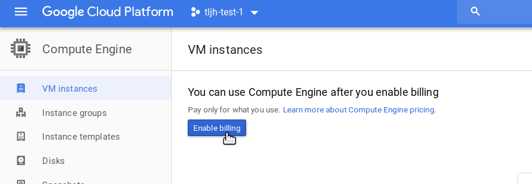It might take a few minutes for your account to be set up.
Once Compute Engine is ready, click the Create button to start creating the server that’ll run TLJH.
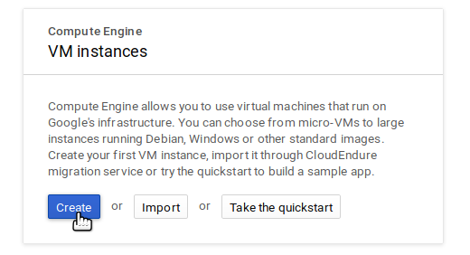If you already have VMs running in your project, the screen will look different. But you can find the Create button still!
This shows you a page titled Create an instance. This lets you customize the kind of server you want, the resources it will have & what it’ll be called.
Under Name, give it a memorable name that identifies what purpose this JupyterHub will be used for.
Region specifies the physical location where this server will be hosted. Generally, pick something close to where most of your users are. Note that it might increase the cost of your server in some cases!
For Zone, pick any of the options. Leaving the default as is is fine.
Under Machine type, select the amount of CPU / RAM / GPU you want for your server.
You can select a preset combination in the default basic view.
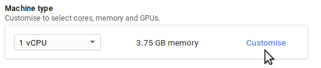If you want to add GPUs, you should click the Customize button & use the Advanced View. You need to request a quota increase before you can use GPUs.
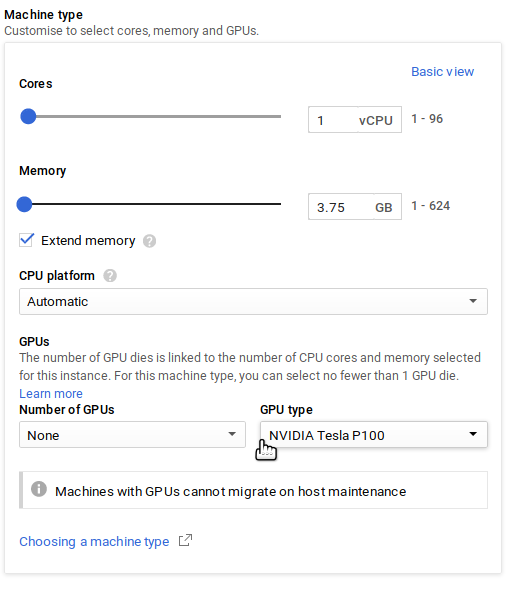Check out our guide on How To Estimate Memory / CPU / Disk needed to help pick how much Memory / CPU your server needs.
Under Boot Disk, click the Change button. This lets us change the operating system and the size of your disk.
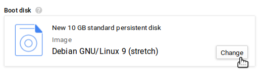This should open a Boot disk popup.
Select Ubuntu 18.04 LTS from the list of operating system images.
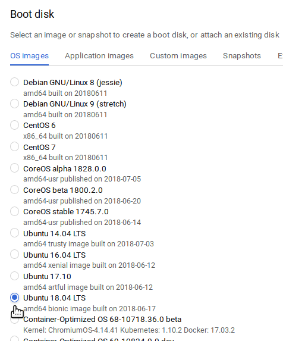You can also change the type and size of your disk at the bottom of this popup.
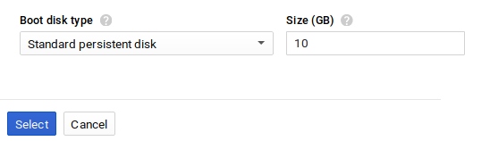Standard persistent disk type gives you a slower but cheaper disk, similar to a hard drive. SSD persistent disk gives you a faster but more expensive disk, similar to an SSD.
Check out our guide on How To Estimate Memory / CPU / Disk needed to help pick how much Disk space your server needs.
Click the Select button to dismiss the Boot disk popup and go back to the Create an instance screen.
Under Identity and API access, select No service account for the Service account field. This prevents your JupyterHub users from automatically accessing other cloud services, increasing security.
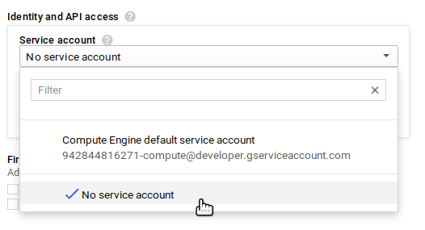Under Firewall, check both Allow HTTP Traffic and Allow HTTPS Traffic checkboxes.
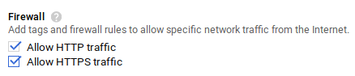Click the Management, disks, networking, SSH keys link to expand more options.
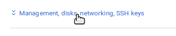This displays a lot of advanced options, but we’ll be only using one of them.
Copy the text below, and paste it into the Starup script text box. Replace
<admin-user-name>with the name of the first admin user for this JupyterHub. This admin user can log in after the JupyterHub is set up, and can configure it to their needs. Remember to add your username!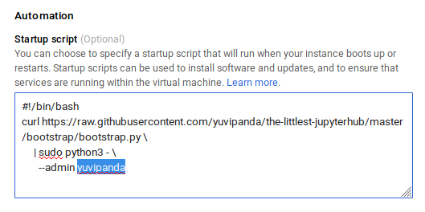#!/bin/bash curl https://raw.githubusercontent.com/jupyterhub/the-littlest-jupyterhub/master/bootstrap/bootstrap.py \ | sudo python3 - \ --admin <admin-user-name>
Note
See What does the installer do? if you want to understand exactly what the installer is doing. Customizing the Installer documents other options that can be passed to the installer.
Click the Create button at the bottom to start your server!
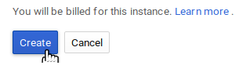We’ll be sent to the VM instances page, where we can see that our server is being created.
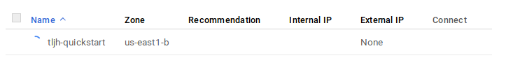In a few seconds your server will be created, and you can see the External IP used to access it.
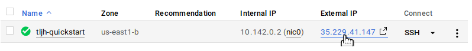The Littlest JupyterHub is now installing in the background on your new server. It takes around 5-10 minutes for this installation to complete.
Check if the installation is complete by copying the External IP of your server, and trying to access it with a browser. Do not click on the IP - this will open the link with HTTPS, and will not work.
Accessing the JupyterHub will also fail until the installation is complete, so be patient.
When the installation is complete, it should give you a JupyterHub login page.

Login using the admin user name you used in step 6, and a password. Use a strong password & note it down somewhere, since this will be the password for the admin user account from now on.
Congratulations, you have a running working JupyterHub!
Step 2: Adding more users¶
Most administration & configuration of the JupyterHub can be done from the web UI directly. Let’s add a few users who can log in!
Open the Control Panel by clicking the control panel button on the top right of your JupyterHub.

In the control panel, open the Admin link in the top left.

This opens up the JupyterHub admin page, where you can add / delete users, start / stop peoples’ servers and see who is online.
Click the Add Users button.

A Add Users dialog box opens up.
Type the names of users you want to add to this JupyterHub in the dialog box, one per line.

You can tick the Admin checkbox if you want to give admin rights to all these users too.
Click the Add Users button in the dialog box. Your users are now added to the JupyterHub! When they log in for the first time, they can set their password - and use it to log in again in the future.
Congratulations, you now have a multi user JupyterHub that you can add arbitrary users to!
Step 3: Install conda / pip packages for all users¶
The User Environment is a conda environment that is shared by all users
in the JupyterHub. Libraries installed in this environment are immediately
available to all users. Admin users can install packages in this environment
with sudo -E.
Log in as an admin user and open a Terminal in your Jupyter Notebook.

Install gdal from conda-forge.
sudo -E conda install -c conda-forge gdal
The
sudo -Eis very important!Install
therewithpipsudo -E pip install there
The packages gdal and there are now available to all users in JupyterHub.
If a user already had a python notebook running, they have to restart their notebook’s
kernel to make the new libraries available.
See Install conda, pip or apt packages for more information.